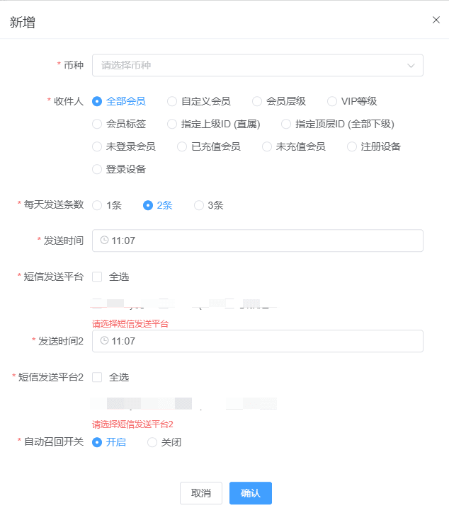
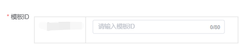
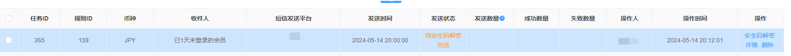
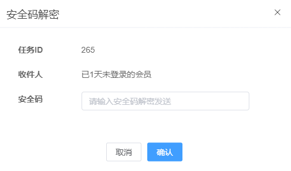
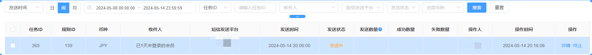
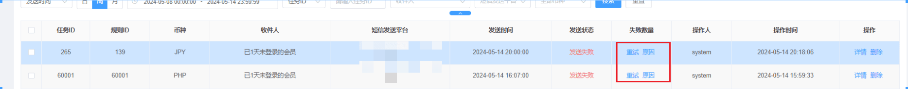

短信召回
短信召回规则
使用的前置条件，必须配置短信通道，并且该短信平台必须支持营销短信，不然无法使用，需要注意短信召回，会消耗大批量短信，请根据运营情况合理使用
收件人，时间范围选择越长，会员数量越多，会消耗大量的短信费用，假设短信单条价格为0.1，如果召回会员数量为100000 一次召回价格：100000*0.1=10000 请合理使用短信召回功能
当前召回，单次召回最大为100W，超出100W不会进行召回，后续会完善该功能
新增：
币种：选择一个币种，单选
收件人：

已1天未登录的会员：例如：如果会员15号登录过，16号未登录，17号可以操作召回16号未登录的会员
已2天未登录的会员:
每天发送条数：三选1，分别为：1条，2条，3条
发送时间：站点时间24小时内自定义选择
短信发送平台：需要自己配置支持营销短信的平台，至少一个，否则无法使用自动召回短信功能
（需要注意1，特定短信平台可能需要审核后才可以使用营销短信功能，使用前请先通过审核，
2，我司已接入的短信平台支持营销短信的有：颂量，雪融，云极速，先客国际，并且需要您自己开户，我司无法给您开户，您也可以提供支持营销短信的平台，我们会为您接入）
3，勾选短信平台，如果短信平台显示模板ID,则需要去短信平台设置并申请审核，通过之后才可以使用，如果短信平台显示短信内容则可以直接输入内容(我司都是根据短信平台的要求接入的)

自动召回开关：开启后会根据配置自动发送短信，会消耗大量短信

待安全码解密发送
当新增短信召回规则成功，待安全码解密发送，会有对应新增的数据，必须先解密才会按时发送，如果没解密不会发送

需要安全码才可以解密，如下图

发送中
解密成功状态会变成发送中，等达到设置的发送时间会自动发送，未到时间会一直显示发送中

当发送时间到达，会进行发送，这个时候发送中的状态会变成已完成或者发送失败
如果发送失败可以去查看原因，根据原因修改配置，再次尝试
